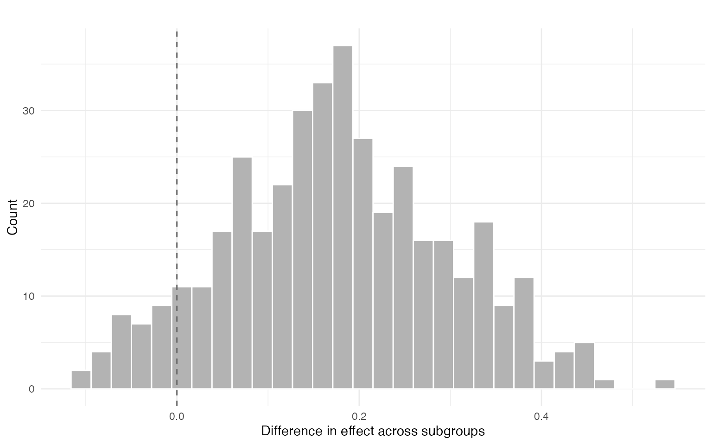
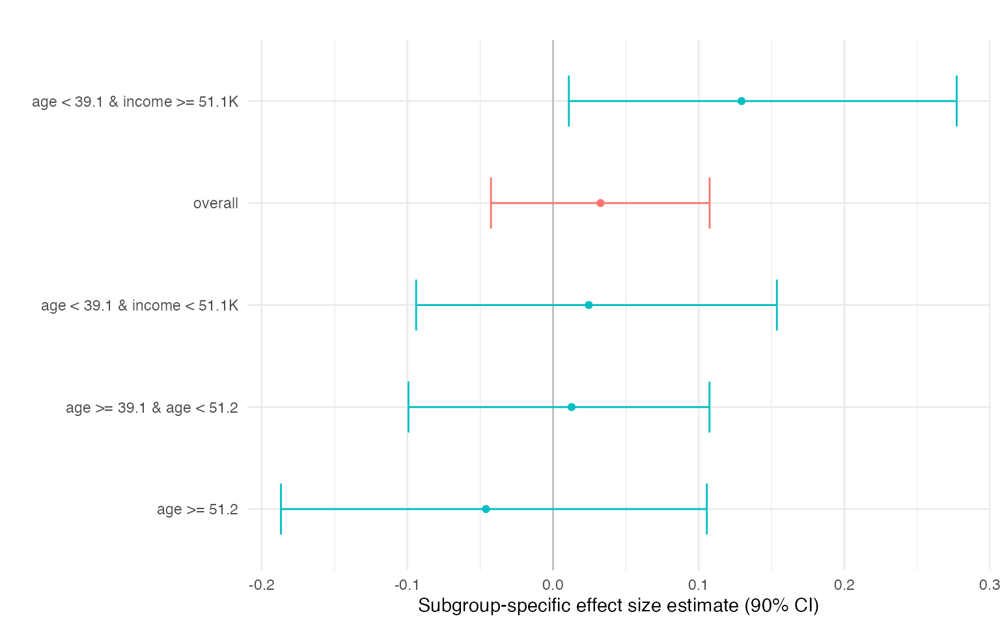

Introduction to princeBART
princeBART authors
2026-01-22
introduction.RmdOverview
princeBART implements Principal Stratification with Bayesian Additive Regression Trees (BART) for causal inference with endogenous treatments. It estimates treatment effects for compliers—units whose treatment status is affected by an instrument.
While the canonical application is noncompliance in randomized experiments, the framework applies broadly to any setting with:
- An instrument Z that affects treatment uptake but has no direct effect on outcomes
- An endogenous treatment W whose causal effect on Y is of interest
- Covariates X that may confound the Z-W or W-Y relationships
The Setup
We observe:
- Z: Instrument (e.g., randomized assignment, geographic variation, policy change)
- W: Endogenous treatment/exposure of interest
- Y: Outcome
- X: Covariates
Key Assumptions
- Conditional randomization: — the instrument is as-good-as-random given covariates
- Exclusion restriction: Z affects Y only through W
- Monotonicity: No defiers (units for whom Z decreases W)
Principal Strata
The population consists of three principal strata:
| Stratum | W if Z=0 | W if Z=1 |
|---|---|---|
| Compliers | 0 | 1 |
| Never-takers | 0 | 0 |
| Always-takers | 1 | 1 |
The key estimand is the Complier Average Causal Effect (CACE), also known as the Local Average Treatment Effect (LATE)—the causal effect of W on Y for units whose treatment is affected by the instrument. princeBART also targets conditional complier effects given covariates, denoted CATE_C(x).
Simulated Example Data
Let’s create a simulated dataset with clear treatment effect heterogeneity to demonstrate .
library(princeBART)
set.seed(42)
n <- 800
# Covariates
X <- data.frame(
age = rnorm(n, 40, 10),
education = rnorm(n, 12, 3),
income = rnorm(n, 50000, 15000)
)
# Principal strata (latent)
# Probability of being a complier depends on covariates
p_complier <- plogis(-1.2 + 0.03 * X$age + 0.12 * X$education - 0.00001 * X$income)
p_always <- plogis(-2 + 0.01 * X$age)
p_never <- pmax(1 - p_complier - p_always, 0)
denom <- p_complier + p_never + p_always
p_complier <- p_complier / denom
p_never <- p_never / denom
p_always <- p_always / denom
strata <- sapply(1:n, function(i) {
sample(c("complier", "never", "always"), 1,
prob = c(p_complier[i], p_never[i], p_always[i]))
})
# Instrument (randomized, possibly conditional on X)
Z <- rbinom(n, 1, 0.5)
# Treatment uptake depends on strata and instrument
W <- Z
W[strata == "always"] <- 1L
W[strata == "never"] <- 0L
# Heterogeneous complier treatment effect
tau <- 0.2 +
0.15 * (X$education > 12) -
0.10 * (X$age > 50) +
0.08 * (X$income > 60000)
# Potential outcomes (only Y(W) is observed)
lin0 <- -0.6 + 0.01 * X$age + 0.04 * X$education + 0.00001 * X$income
Y0 <- plogis(lin0)
Y1 <- plogis(lin0 + tau)
Y <- rbinom(n, 1, ifelse(W == 1, Y1, Y0))
# Combine into data frame
simdata <- data.frame(X, Z = Z, W = W, Y = Y)
# True ATE among compliers
true_ate_c <- mean(tau[strata == "complier"])Basic Usage
Formula Interface
princeBART uses a 2SLS-style formula:
Y ~ covariates | Z | W
library(future)
# Set up parallel backend (works on all platforms)
plan(multisession, workers = 4)
# Fit the model
fit <- prince_BART(
Y ~ age + education + income | Z | W,
data = simdata,
n_chains = 2,
n_warmup = 100,
n_samples = 200,
instrument_overlap = c(0.1, 0.9),
keep_trees = TRUE # Save trees for generalization
)Extracting Treatment Effects
princeBART provides average effects for compliers (LATE-like effects) via summary() and coef(). These are mixed estimands—averages of conditional complier effects over the empirical covariate distribution— and can optionally be restricted to treated compliers (treated_only = TRUE).
fit <- readRDS(system.file("extdata", "fit_intro.rds", package = "princeBART"))
# Print summary
print(fit)
#> Principal Stratification BART Fit
#> ---------------------------------
#> Chains: 2
#> Iterations: 200
#> Units: 800
#> Trees: saved
#>
#> Use summary() or coef() to extract treatment effects.
# Summary shows strata distribution and treatment effect
summary(fit)
#> Principal Stratification BART Summary
#> =====================================
#>
#> Principal Strata Distribution:
#> # A tibble: 3 × 10
#> variable mean median sd mad q5 q95 rhat ess_bulk ess_tail
#> <chr> <dbl> <dbl> <dbl> <dbl> <dbl> <dbl> <dbl> <dbl> <dbl>
#> 1 compliers 0.690 0.690 0.0233 0.0243 0.651 0.727 1.03 84.3 216.
#> 2 never-takers 0.153 0.152 0.0162 0.0157 0.126 0.178 1.00 125. 215.
#> 3 always-takers 0.158 0.158 0.0168 0.0175 0.131 0.185 1.04 112. 194.
#>
#> Mixed ATE for Compliers:
#> # A tibble: 5 × 10
#> variable mean median sd mad q5 q95 rhat ess_bulk ess_tail
#> <chr> <dbl> <dbl> <dbl> <dbl> <dbl> <dbl> <dbl> <dbl> <dbl>
#> 1 Y(0) | comp… 0.727 0.728 0.0317 0.0313 0.674 0.777 1.00 130. 188.
#> 2 Y(1) | comp… 0.759 0.761 0.0330 0.0308 0.702 0.809 1.03 111. 215.
#> 3 Y(0) | neve… 0.549 0.553 0.0622 0.0584 0.449 0.649 1.04 101. 188.
#> 4 Y(1) | alwa… 0.662 0.659 0.0570 0.0577 0.570 0.761 0.999 111. 205.
#> 5 MATE | comp… 0.0326 0.0306 0.0451 0.0417 -0.0426 0.108 1.01 128. 215.
# Mixed ATE for Compliers (default)
coef(fit)
#> # A tibble: 5 × 10
#> variable mean median sd mad q5 q95 rhat ess_bulk ess_tail
#> <chr> <dbl> <dbl> <dbl> <dbl> <dbl> <dbl> <dbl> <dbl> <dbl>
#> 1 Y(0) | comp… 0.727 0.728 0.0317 0.0313 0.674 0.777 1.00 130. 188.
#> 2 Y(1) | comp… 0.759 0.761 0.0330 0.0308 0.702 0.809 1.03 111. 215.
#> 3 Y(0) | neve… 0.549 0.553 0.0622 0.0584 0.449 0.649 1.04 101. 188.
#> 4 Y(1) | alwa… 0.662 0.659 0.0570 0.0577 0.570 0.761 0.999 111. 205.
#> 5 MATE | comp… 0.0326 0.0306 0.0451 0.0417 -0.0426 0.108 1.01 128. 215.Effect Heterogeneity by Segments
We can automatically find segments (subgroups) with different conditional complier effects using a shallow regression tree on posterior mean CATE_C(x). The segment-level summaries in res$effects correspond to subgroup-specific average effects among compliers, obtained by averaging conditional effects within each covariate-defined segment. Differences across segments highlight departures from effect homogeneity and provide an interpretable summary of treatment effect heterogeneity.
res <- segment_heterogeneity(
fit,
min_compliers_bucket = 50,
plot = TRUE,
contrast = TRUE
)
res$contrast$summary
#> mean sd ci_lower ci_upper p_gt0
#> 5% 0.175453 0.1216093 -0.03224862 0.3835347 0.92
res$plot$diff
The segment-level summaries in res$effects correspond to subgroup-specific average effects among compliers, obtained by averaging conditional effects within each covariate-defined segment. Differences across segments highlight departures from effect homogeneity and provide an interpretable summary of treatment effect heterogeneity. Segments are constructed post hoc to summarize heterogeneity in the posterior distribution of CATE_C(x).
res$effects
#> segment mean sd ci_lower ci_upper p_gt0 n
#> overall 0.0326 0.0451 -0.0426 0.108 0.790 800
#> age >= 51.2 -0.0461 0.0876 -0.1868 0.106 0.290 97
#> age >= 39.1 & age < 51.2 0.0127 0.0619 -0.0993 0.107 0.590 322
#> age < 39.1 & income < 51.1K 0.0245 0.0767 -0.0940 0.154 0.637 199
#> age < 39.1 & income >= 51.1K 0.1294 0.0808 0.0108 0.277 0.965 182
#> n_complier
#> 551.6
#> 74.7
#> 222.3
#> 137.4
#> 117.2
res$plot$effect